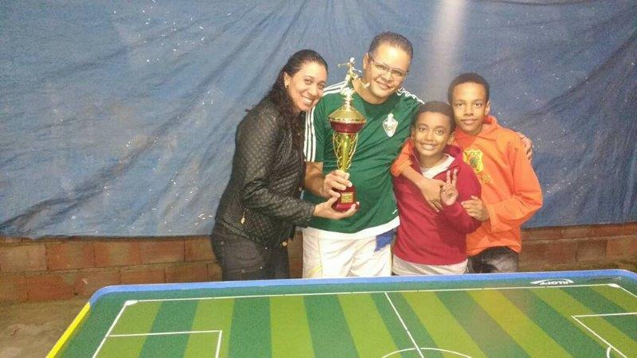
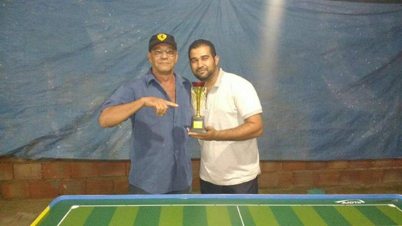
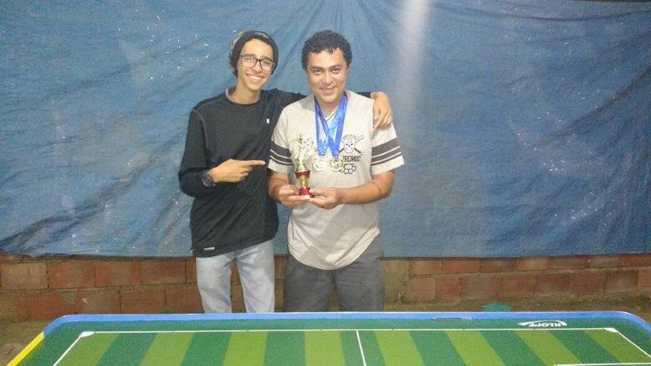

Sapo fatal
Com uma campanha mais que positiva, o Real Palestra (técnico Fábio), na noite do dia 03/02 (sábado), mostrou porque é uma das equipes mais tradicionais das mesas do Grêmio Vetor Norte e levantou a taça do Troféu Geraldo Decourt 2018.
O caminho da conquista teve início com uma vitória na estreia contra a Chapecoense (Rubens) pelo placar de 4x0, na sequência em um jogo morno o Real empatou em 0x0 com o FG Usinagem (Fagner). Veio o terceiro jogo e junto com ele o único revés, derrota por 3x2 para o Baleares (Rodrigo), em um jogo eletrizante no mais antigo clássico do Vetor Norte. Fechando a primeira fase o Real venceu a Sele-Galo (João Paulo) pelo placar de 2x1 e se classificou em segundo no grupo "B".
As quartas de final foi contra o Villa (Edézio), uma das gratas surpresas da competição e do GRFMVN nesse ano de 2018. Falou mais alto a experiência do técnico Fábio e o Real Palestra bateu o Villa por de 2x0.
Nas semifinal, mais um confronto difícil pela frente, o "Sapo Guerreiro" se degladiou com um dos seus mais fortes oponente o tradicional Soc. Ventura (Gleison), o jogo foi pegado, com ambas as equipes criando e perdendo oportunidades durante todo o jogo, e a menos de um minuto para o término da partida o Real logrou êxito em um belo chute em diagonal sem chances de defesa para o goleiro do Soc. Ventura decretando a vitória por 1x0.
Veio a grande final e nela mais um confronto com o Baleares, seu algoz na primeira fase e dono da melhor campanha da competição com 100% de aproveitamento até ali. Foi um jogo com todos os ingredientes de uma grande final, tensão, disputa pelos espaços em campo, muitas finalizações, enfim, um jogo muito bom de se ver. O placar só saiu do "0" nos minutos finais da segunda etapa, onde depois de muito insistir pelo meio o Real em um chute fatal do botão "8- Douglas", as redes do Baleares finalmente balançou. Com o pouco tempo restante para buscar o empate e uma saída de bola pelo meio ruim (coisa rara em se tratando do Baleares), o "Sapo Guerreiro" segurou o placar de 1x0 e ficou com o título muito comemorado ao rítmo do hino do clube.
Real Palestra o "Sapo fatal" campeão do Troféu Geraldo Decourt 2018.
Texto Fabio Henrique.
Uma campanha memorável
Apesar de não ter comemorado o título do Troféu Geraldo Decourt 2018, o Baleares do técnico Rodrigo, fez uma campanha memorável.
Mantendo sua regularidade nas mesas do Vetor Norte o Baleares chegou à final com 100% de aproveitamento, tendo vencido os seis adversários que teve pela frente. Na primeira fase o "Calango Atômico" bateu a Sele-Galo (João Paulo) 1x0, FG Usinagem (Fagner) 1x0, Chapecoense (Rubens) também 1x0 e Real Palestra que cruzaria seu caminho novamente na final por 3x2. Nas quartas de final o Baleares enfrentou e venceu a equipe do Ventura Jr do jovem técnico Raul por 2x1 e se credenciou às semifinais onde, mediu forças para chegar à finalíssima contra o Gálatas (Leandro) e mais uma vez levou a melhor batendo a "Pantera" pelo placar de 2x0.
Veio a final e com ela expectativa de coroar o belo trabalho que fizera até ali... Só faltou combinar com seu mais antigo e tradicional rival Real Palestra (Fábio), que apesar de ter sido batido pelo Baleares na primeira fase entrou focado na final. As duas equipes se degladiaram em pé de igualdade buscando de todas as formas a vitória que só aconteceu nos minutos finais a favor do Real Palestra, quebrando assim a invencibilidade do Baleares que ficou com o vice-campeonato e pela regularidade chegou à primeira posição do "Ranking GRFMVN".
Texto Fabio Henrique.
Um derby pintado de laranja
Gálatas Futebol Clube (técnico Leandro) e Sociedade Botonista Ventura (técnico Gleison). Esse foi o duelo pelo 3° lugar entre dois gigantes do Grêmio Vetor Norte.
Sim meus caros amigos, essa disputa que poderia ter ocorrido na grande final, abrilhantou a todos do Vetor Norte em um jogo entre os "Laranja e Preto" de nossa estimada agremiação na disputadíssima colocação pelo 3° lugar da grande noite do Troféu Geraldo Decourt.
A partida se iniciou como todas as outras entre esses dois declarados rivais do Vetor Norte, até que no primeiro quarto do primeiro tempo, Carlim (botão 8 ) da Sociedade Ventura abriu o placar fazendo 1x0 em um chute onde a bola em diagonal parecia estar difícil para a finalização do Soc. Ventura, mas que para a felicidade do técnico Gleison parou no fundo do gol.
Partida reiniciada e o jogo que pareceria se tranquilizar para o Soc. Ventura não se mostrou assim, pois o Gálatas continuava em suas investidas pelas pontas e levando grande perigo para o gol do Soc. Ventura, mas até que no fim do primeiro tempo o Soc. Ventura faz o seu segundo gol com Zico (botão 10 ), terminando assim o primeiro tempo com 2x0 a favor da Sociedade Ventura.
Vem se o segundo tempo onde o Gálatas dava as cartas, e que de forma clara buscava a todo o momento o gol, e de forma merecida fora premiado com um gol com do botão Davi (5).
A partida se encaminhava para o fim, onde o Gálatas continuava a mandar nas ações do jogo, mas o Soc. Ventura já com o placar que lhe garantia o 3°lugar administrou a partida e assim venceu o derby por 2x1. Para chegar até esse duelo as duas equipes fizeram as seguintes campanha:
Gálatas F.C - 03 vitórias, 01 empate e 02 revés
Soc. Ventura - 03 vitórias, 02 empates e 01 revés
Parabéns Gálatas!
Parabéns Soc. Ventura!
Além do terceiro lugar na competição o Soc. Ventura do técnico Gleison faturou também a medalha de melhor ataque e a inédita medalha de melhor defesa da primeira fase da competição.
Texto: Fábio Henrique e Gleison Ventura
